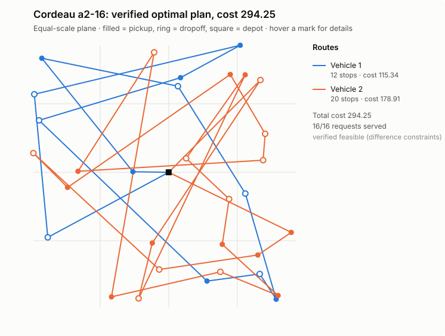

ДоказательстваProof
Одна задача — все решатели — один независимый судьяOne instance, every solver, one independent judge
Эталон Cordeau (2006) a2-16 с доказанным оптимумом 294.25. Время до доказанного оптимума (меньше — лучше):Cordeau (2006) a2-16 with a proven optimum of 294.25. Time to a proven optimum (lower is better):
Шкала логарифмическая. CBC не доказал оптимум за 60 с (разрыв 20%). LP-релаксация компактной MIP-модели — 85.27: слабость big-M объясняет разницу.Log scale. CBC did not prove optimality in 60 s (20% gap). The LP relaxation of the compact MIP is 85.27: big-M weakness explains the difference.
| РешательSolver | СтатусStatus | СтоимостьCost | Время, сTime, s |
|---|
